Soroush Seif · Side · September 2026
Nightshift: the console for an engine that works while I sleep.
At night an autonomous engine crawls theside.studio, measures where the site stands in search and in AI answers, picks up to three missions, writes the code, and lands it unattended behind gates it cannot move. Nightshift is what I read in the morning. The console is behind a login; these are the operator's screens and the rules the engine runs under.
The console carries no approval control. The operator vetoes and reverts. Every number on every screen links to the file in git it was read from, and a number nobody measured is drawn as a gap. Its budget, its trust classes and its own policy are files the engine is not allowed to edit.
What a visitor sees
If you open theside.studio/engine you get this and nothing else. There are no passwords. An address on the operator allowlist gets a one-time link that expires in fifteen minutes; any other address gets the same neutral message and no link, so the form does not reveal who is on the list.
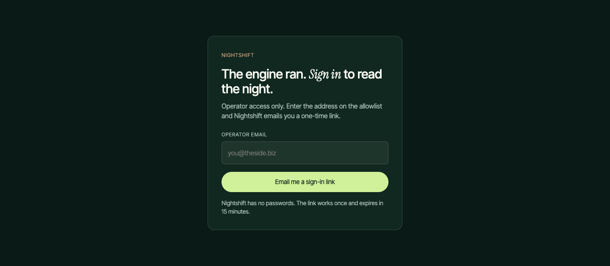
Last night, in one screen
The Morning Brief answers the operator's three questions in order: did the engine run and what did it cost against the $45 cap, where does the site stand on its two grades, and what landed that I might want to take back. Health is read from the run's own artifacts, and twelve self-checks run against the console itself, each naming the file in git that would settle it.
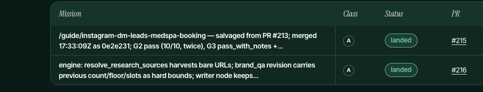
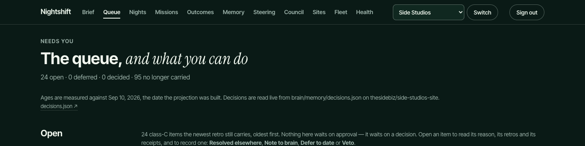
The engine behind the console
Nightshift is a projection built from git at deploy time; it holds no database of its own. The engine it reads is two layers: a sensor DAG that measures and drafts, and a decision layer that chooses what to do with the evidence.
The sensor graph: 19 nodes, one bounded loop
A LangGraph state graph in Python, run by GitHub Actions at 08:23 UTC. Seven nodes call a model or a paid API; twelve are deterministic. It is not a strict DAG: brand QA can send a draft back to the writer, at most twice, with the violations as feedback.
| # | Node | What it does | Model / API |
|---|---|---|---|
| 1 | architecture | Pre-flight inventory of the codebase; strategist, designer and brand QA read this snapshot | |
| 2 | crawler | Fetch sitemap, pages, robots and llms.txt artifacts | |
| 3 | outcomes | Refresh Search Console and read GA4, without coupling their failures | |
| 4 | analyzer | Run nine analyzer categories against the crawl | |
| 5 | standings | Compute the scorecard: hygiene grade, business grade, kill gate | |
| 6 | geo_scout | Sweep 20 positioning queries against ChatGPT and record who it cites | DataForSEO |
| 7 | keyword | Opportunity-gap analysis from DataForSEO and Search Console | |
| 8 | strategist | Pick the next page from inventory, findings, keywords and GEO evidence | Claude |
| 9 | writer | Draft the page against the site's brand guide and sourced research | Claude |
| 10 | designer | Turn the draft into Next.js TSX inside the architecture inventory | Claude |
| 11 | art_director | Own the page's visual slots | |
| 12 | illustrator | One on-brand hero illustration per article | Recraft |
| 13 | photo_sourcer | Licensed fallback hero when the illustrator could not cover it | Pexels |
| 14 | brand_qa | Validate draft and TSX against the brand guide and the diff-scope contract; loop back to the writer at most twice | Claude |
| 15 | fixer | Deterministic patches for safe categories (meta, schema, alt text) | |
| 16 | validator | Run the site's npm scripts against the proposed change set | |
| 17 | planner_sync | On ship, strike the keyword from all four planning artifacts | |
| 18 | reporter | Write the daily digest, persist snapshots, honour dry-run | |
| 19 | notifier | Post the digest to Telegram and raise critical alerts |
Routing is capability-gated. With no answer-engine credentials the GEO node emits no mentions and a loud digest line. A missing measurement is never recorded as a zero. The writer path closes in one decision for any site without a brand guide or a platform the engine may write to. A scope contract forbids the in-graph agents from touching layout, components, shared libraries, workflows, package files, and the engine's own source.
By the numbers
How a night runs
- Sense. A scheduled GitHub Actions run executes the LangGraph DAG: crawl the site, analyze pages, compute standings, sweep AI answer engines for citations, mine keywords, and write the night's findings, standings and GEO mentions as JSON snapshots committed to the repo.
- Decide. A decision layer (the "brain") reads the snapshots, the open experiments, the council's directives and the priority weights, and picks at most three missions per run by weight times evidence. Caps are read from policy.json, which the engine cannot edit.
- Do. Each mission is dispatched to an AI coding agent working in its own git worktree with a written acceptance list. A verifier re-runs the deterministic gates (lint, type-check, build, tests, brand QA, scope allowlist) on the result.
- Land or stage. Class A work lands on its own. Class B policy requires a pull request and one night of canary before landing. Class C work waits for a human decision.
- Retro. The run writes a retrospective in plain language, records lessons in its own words, opens or closes experiments, and sends the founder a digest. Nightshift renders all of that the next morning.
Trust ladder and veto
Autonomy is granted by class of change. The classes are defined once, in policy, and the engine cannot promote itself.
| Class | What happens | Examples |
|---|---|---|
| A | Lands unattended once the deterministic gates pass. The operator sees it in the morning with a Revert link. | Content pages the writer drafted from sourced research, engine code with tests, hygiene fixes (meta, schema, alt text) |
| B | Policy requires a pull request and one night of canary before landing. | Components, performance changes, internal links, changes to the Nightshift dashboard itself, per-site engine config |
| C | Staged with a diff, a risk note and the keyword it moves. A human lands it or not. Nothing else in the loop waits on a human. | Workflows, policy, the orchestrator and sweep scripts, the Nightshift contract and metrics, anything that sends messages, publishes off-repo, spends on a new API, or deletes a live route |
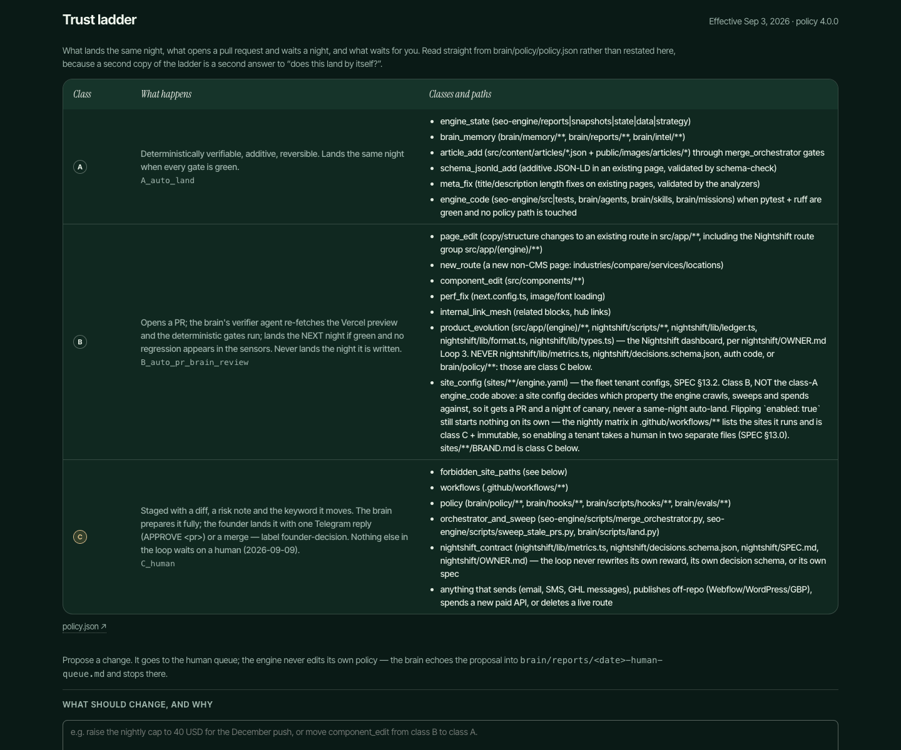
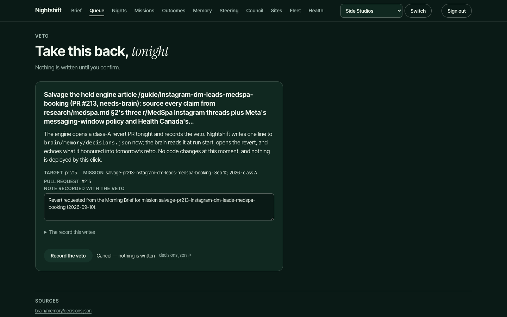
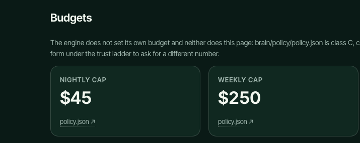
Receipts
Every figure on every page carries a source chip that opens the file it came from. The console refuses to call a check a pass when the evidence is not committed.
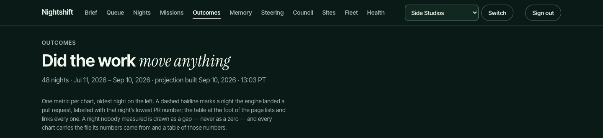
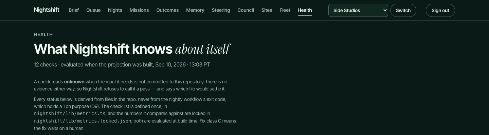
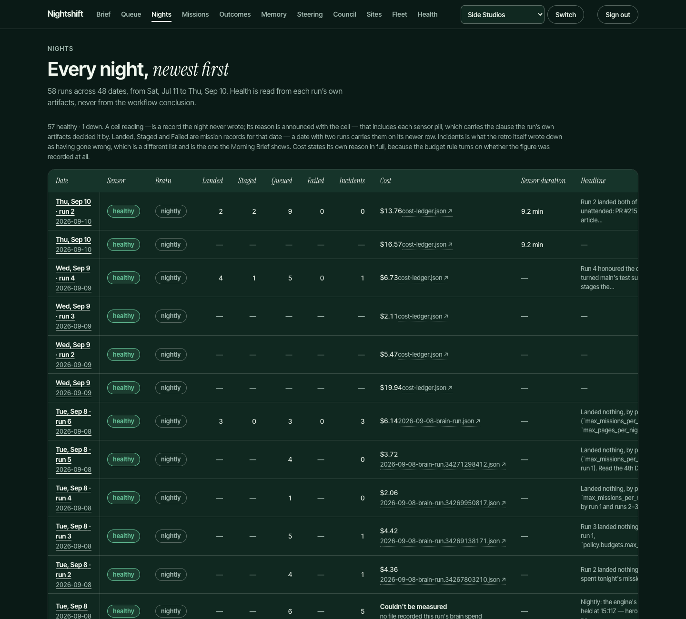
Council
Strategy is set once a week, away from the nightly loop. A council session writes memos, two independent reviewers (Codex and Grok) attack them, and every high finding is answered in writing. Only then can a memo become a directive the engine reads before it picks anything. Every directive lands in git, where I can veto or revert it.
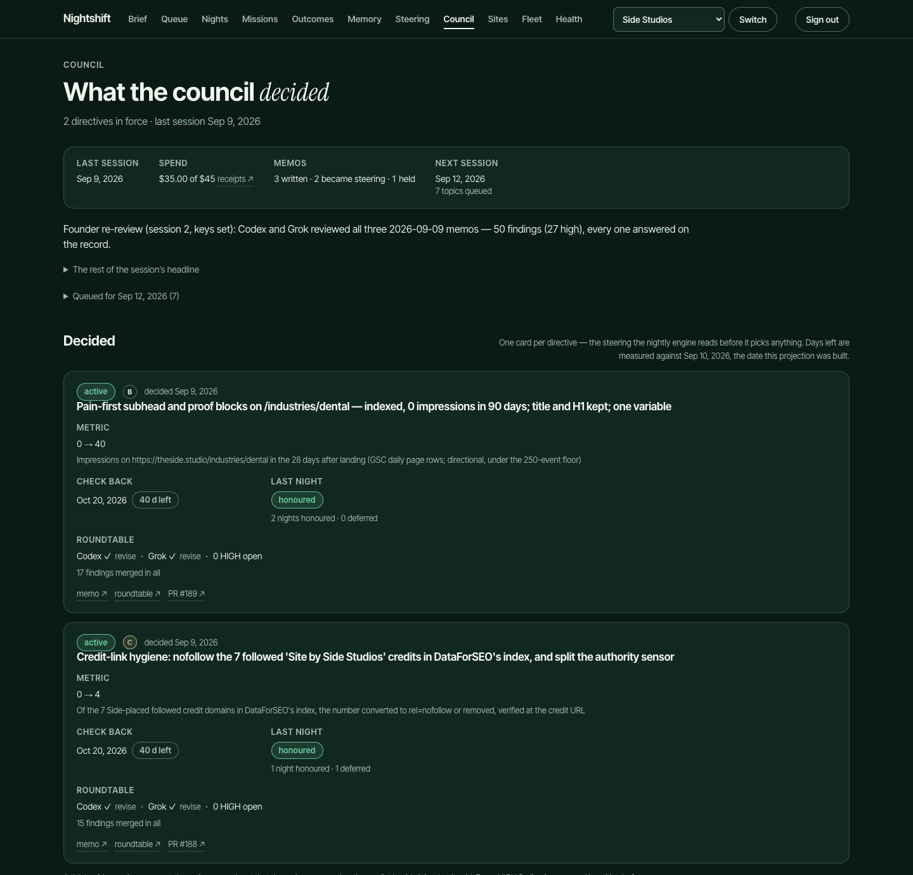
Memory and steering
The engine remembers in its own words. Lessons, experiments with verdicts and the decisions log are all files in the repository; the console renders them without summarizing. It has written 77 lessons since the redesign, one line each, dated by the night they were written, and an experiment carries a verdict when it closes: supported or refuted.
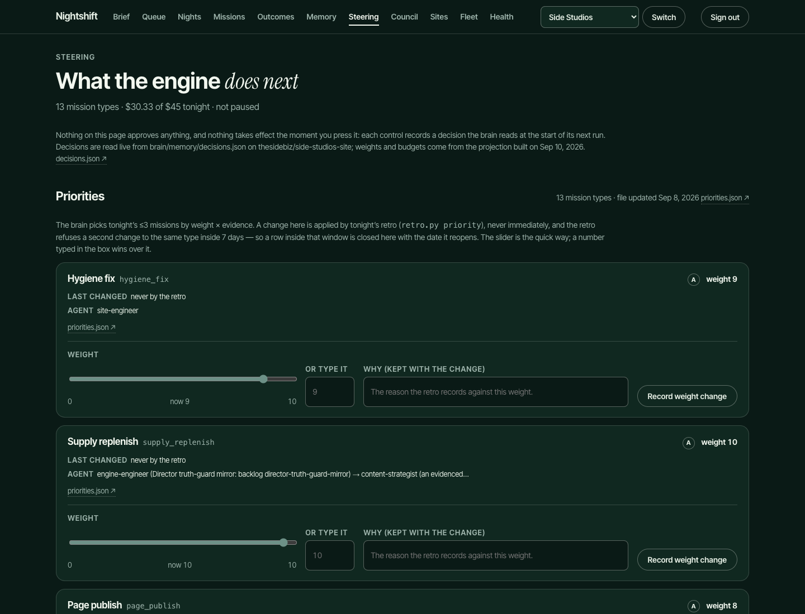
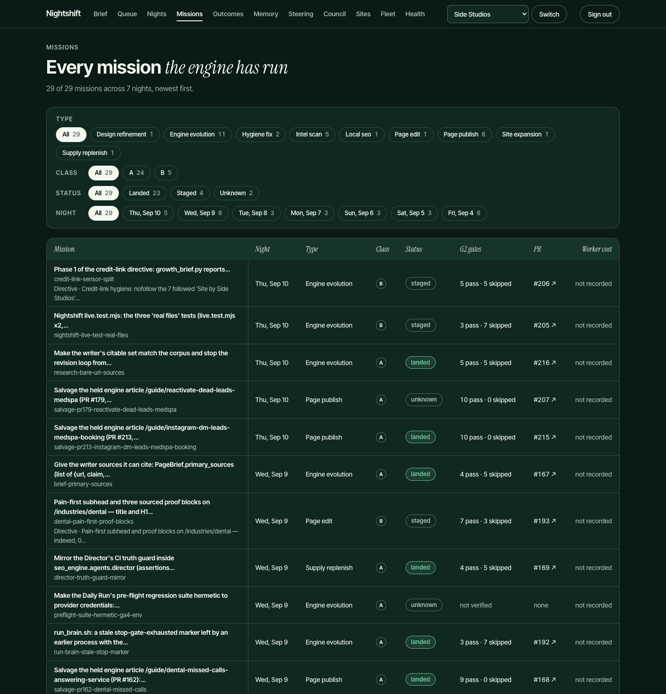
Where it stands
The engine runs nightly on our own site first; client sites are enabled one at a time behind the same gates. Every night's receipts are on these pages, each figure linked to the file in git it was read from, and a number nobody measured is drawn as a gap. Confirming a veto writes one line to a decisions file, and the engine opens the revert pull request on its next run. A kill gate in the policy file names a date and a minimum number of non-branded search clicks; if the engine has not earned them by then, it stops.
How it was built, and what I did
I wrote the specification: two audiences, three questions each, and four principles. Two of them read, in the spec's words, "Veto, not approve. Receipts, not logs." Each principle earned its place from a recorded failure, and the spec names the failure beside the rule.
I defined the trust classes, the budgets, the acceptance criteria per phase, the projection schema and the locked metrics contract. AI coding agents (Claude Code and Codex) implemented it under those constraints, in their own worktrees, with the same gates the engine uses at night. I reviewed the diffs, ran the tests, and vetoed what did not meet the spec. I own what it must do, how it is allowed to do it, and whether it did.
The engine that Nightshift reads was built the same way, over the summer of 2026. It has run 72 times across 59 nights since July 11, and the Nights page lists every run. The unattended landing evidenced here is class A; class B opens a pull request and waits a night of canary, and I merge those myself.
If you want the primary sources, I can walk your team through the repository on a call.